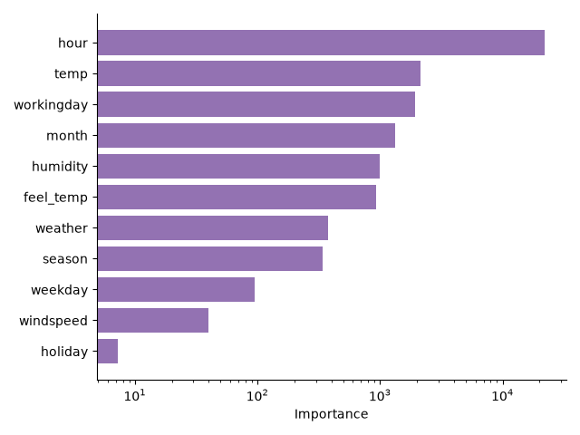

3.3. Shapley Additive Global Explanation (SAGE)#
Introduced in Covert et al.[1], Shapley Additive Global Explanation (SAGE) builds on top of Shapley values. In game theory, Shapley values have been proposed as a solution to the credit allocation scheme for cooperative games. As explained in the Shapley value wikipedia page:
“The Shapley value determines each player’s contribution by considering how much the overall outcome changes when they join each possible combination of other players, and then averaging those changes.”
Shapley values have then been applied to machine learning models to measure the contribution of features. The definition above can be translated to the predictive modeling setting by replacing the notion of “outcome” by the model performance measured through a loss function, and the notion of “players” by features.

3.3.1. Theoretical index#
To quantify feature contributions in a predictive model, SAGE relies on a value function \(v\) that measures the loss reduction achieved by a group of features \(S\) compared to a baseline prediction (the chance level). For a model \(f\), the value function is defined as:
Then, the SAGE value of a feature \(j\) among \(d\) features is defined as:
SAGE values have been shown to be the unique credit allocation scheme that satisfies the following properties:
Efficiency: They sum to the total gain in performance of the model with respect to the chance level: \(\sum_{j=1}^d \psi^j_{SAGE} = v_f([d]) - v_f(\emptyset)\)
Symmetry: If two features contribute equally to all subsets of features, they receive the same SAGE value.
Null player: If a feature does not improve the performance of any subset of features, that is \(v_f(S\cup \{j\}) = v_f(S)\) for all \(S\subseteq [d] \backslash \{j\}\), then its SAGE value is zero.
Linearity: The Shapley values of a linear combination of two value functions is the linear combination of the Shapley values of each value function.
Note
Relevance for machine learning
Initially rooted in game theory, it is not clear whether the properties satisfied by SAGE values are desirable to quantify feature importance in machine learning. For instance, consider the simple case where \(Y = X^1\): a single feature is sufficient to predict the output. If we now add noisy copies of the first feature \(X^j = X^1 + \epsilon_j\), correlated with the first feature by construction, each of these noisy copies will have a non-zero SAGE value, since they all improve the prediction over the chance level (empty set) as they share information with the first feature. In addition, the efficiency property implies that the sum of the SAGE values of all features is equal to the total gain in performance, which does not change when adding noisy copies of the first feature. This has two implications:
The SAGE value of the first feature will decrease as more noisy copies are added, even though the mechanism generating the output has not changed.
The SAGE values of features that are not part of the mechanism generating the output will be non-zero.
3.3.2. Estimation procedure#
As mentioned in Covert et al.[1], computing the value function for a
given subset of features \(S\) requires sampling from the conditional
distribution \(p(X^{\bar{S}}|X^S)\), where \(\bar{S}\) is the
complement of \(S\), in order to compute the expected loss
\(\mathbb{E}[\ell(f(X^S), Y)]\). While the formal analysis of SAGE values
relies on this conditional sampling, it is often intractable in practice, as it
requires modeling the conditional distribution of each possible subset of
features. Consequently, it is often replaced by a simpler procedure that
consists in sampling from the marginal distribution \(p(X^{\bar{S}})\). In
SAGE, this can be done by setting the parameter
imputation to "marginal".
The expected loss is also approximated by repeating the sampling for a number of
draws controlled by the parameter n_permutations.
Finally, the theoretical definition of SAGE values requires computing the value
function for all possible subsets of features, which incurs a combinatorial
complexity. In practice, the SAGE values are approximated by Monte Carlo
sampling where the number of subsets is controlled by the parameter
n_subsets.
3.3.3. Regression example#
The following example illustrates the use of SAGE on a regression task:
>>> from sklearn.datasets import make_regression
>>> from sklearn.linear_model import LinearRegression
>>> from sklearn.model_selection import train_test_split
>>> from hidimstat import SAGE
>>> X, y = make_regression(n_features=2)
>>> X_train, X_test, y_train, y_test = train_test_split(X, y)
>>> model = LinearRegression().fit(X_train, y_train)
>>> sage = SAGE(estimator=model, imputation="marginal")
>>> sage = sage.fit(X_train, y_train)
>>> features_importance = sage.importance(X_test, y_test)
3.3.4. Classification example#
To measure feature importance in a classification task, a classification loss should be used. In addition, the prediction method of the estimator should output the corresponding type of prediction (probabilities or classes). The following example illustrates the use of SAGE on a classification task:
>>> from sklearn.datasets import make_classification
>>> from sklearn.ensemble import RandomForestClassifier
>>> from sklearn.metrics import log_loss
>>> from sklearn.model_selection import train_test_split
>>> from hidimstat import SAGE
>>> X, y = make_classification(n_features=4)
>>> X_train, X_test, y_train, y_test = train_test_split(X, y)
>>> model = RandomForestClassifier().fit(X_train, y_train)
>>> sage = SAGE(
... estimator=model,
... imputation="marginal",
... loss=log_loss,
... method="predict_proba",
... )
>>> sage = sage.fit(X_train, y_train)
>>> features_importance = sage.importance(X_test, y_test)